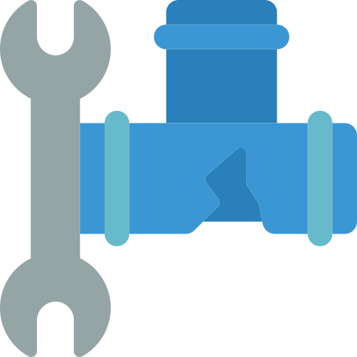

{% with messages = get_flashed_messages(with_categories=true) %} {% if messages%}
{% for category,message in messages %}

{{category}}
Hace 11 minutos
{{message}}
{% endfor %}
{% endif %} {% endwith %}